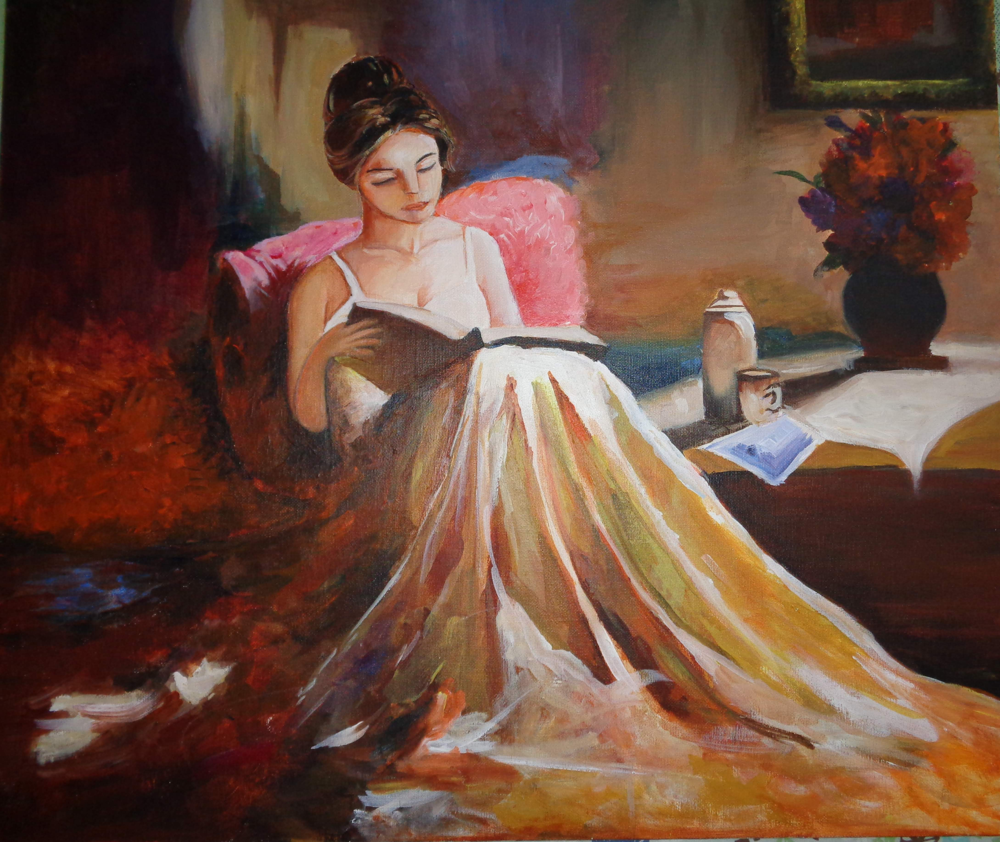

Artwork by Isha!
Stories told through paint & graphite...
Art has been a part of my life for as long as I can remember. I grew up painting, experimenting with different mediums, and somewhere along the way, I began to understand just how powerful creativity can be. To me, art has always been a way of telling stories—a reminder that a picture really can say a thousand words.
This gallery brings together some of my most treasured works. Many are originals inspired by my travels, experiences, and the people I’ve met along the way, while others are studies of works by artists I admire, created as a way to practice, learn, and grow.
Featured works
A closer look
Explore the gallery